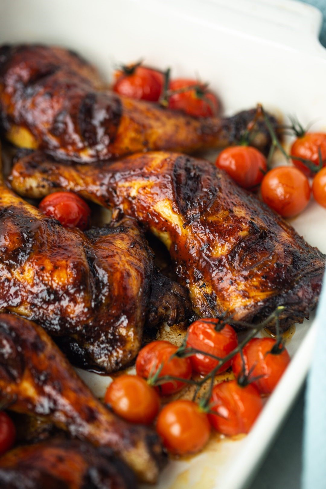
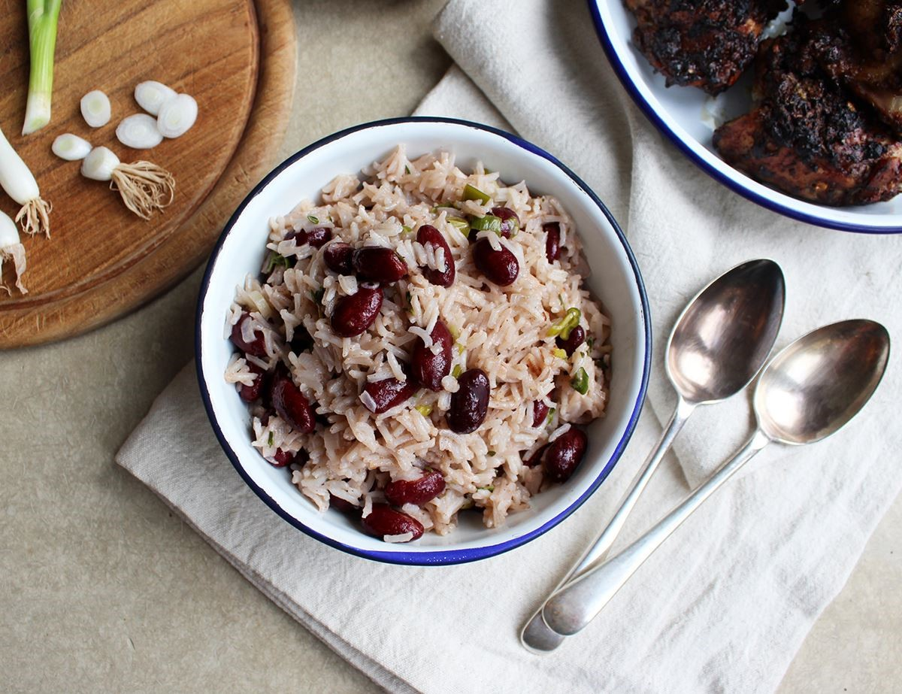
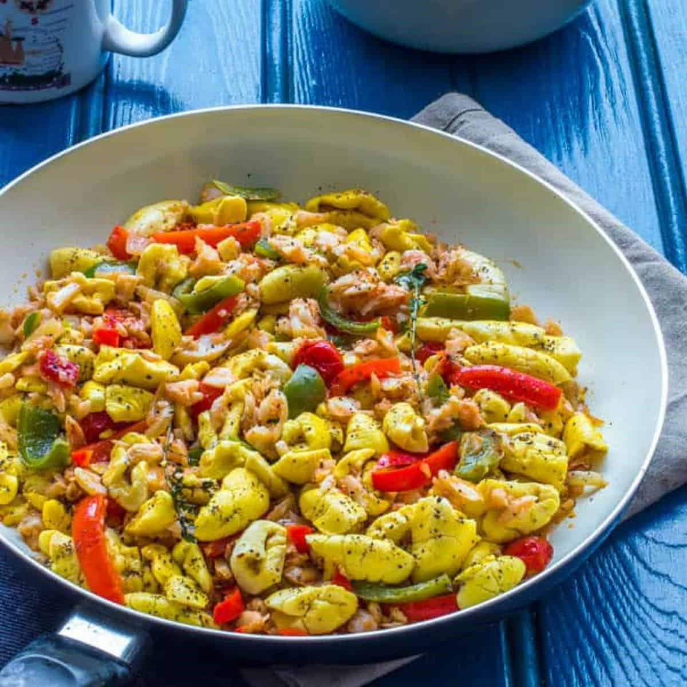
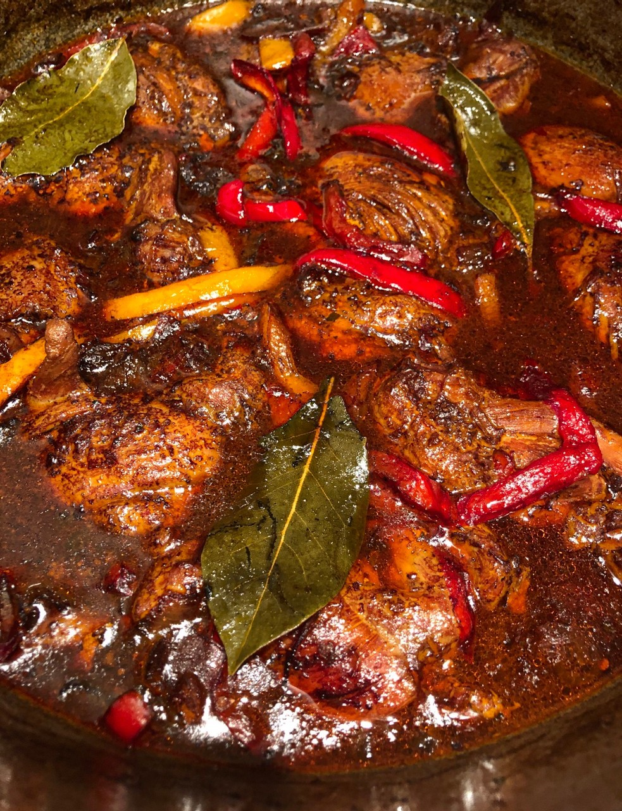
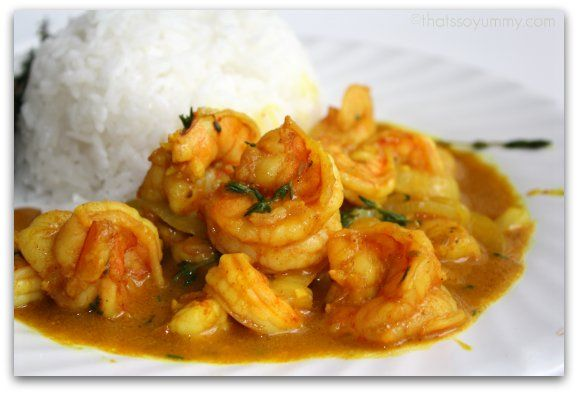

Curry Goat
• 1kg goat meat, washed and cubed
• 2½ tbsp BetaPac curry
• ½ tsp Black Pepper
• 1 sprig fresh thyme
• 1 tsp salt
• 4 cloves of garlic
• 1 medium onion, finely chopped
• 2 spring onions, chopped
• 1 scotch bonnet pepper, finely chopped
• 2 carrots, chopped
• 150ml Oil of your choice
• 1ltr water, boiling
• 1 tsp All-purpose Seasoning
• Lamb seasoning
Instructions
1. In a large mixing bowl, season the goat meat with the curry goat seasoning, All purpose, black pepper, thyme, salt and garlic paste
2. Mix in the onion, spring onions, scotch bonnet pepper, carrots and mix thoroughly before leaving the mixture to marinate in the fridge for a minimum of 2 hours, or ideally overnight
3. Split the mixture into 3 separate batches to be cooked one after another. For each batch, put one third of the rapeseed oil into a heavy-based pot on high heat. Remove the meat from the marinade and brown. Do not throw out the marinade as it is added back in at the later stages
4. Add in lamb stock powder and cover the meat with the boiling water, simmering for 2 hours, or until the meat is tender (you should be able to cut it with a spoon)
5. Add the marinade mixture back in and simmer for a further 30 minutes
6. The dish should have a stew-like consistency. Add more water if required
7. Serve and enjoy!

Ingredients
• 1.5 kg Chicken Leg Quarters
• 0.5 jar Walkerswood Jerk Seasoning
• 1 Shallot quartered
• 1 small Scotch Bonnet
• 1 handful Fresh Coriander
• 2-3 sprigs Fresh Thyme
• 3 bulbs Garlic
• 2 tbsp Honey (room temperature)
• Knob of GInger
• 1 stem Spring Onion
• 1 Lemon or Orange juice
• 1 tbsp Unsalted Butter (room temperature)
• 2 tbsp All-purpose seasoning
• 0.5 BBQ Jerk Sauce
Instructions
1. Clean the chicken & pat dry and then score with deep incisions through the skin to help the flavour get in deeper.
2. In a food processor, mix all the ingredients except the Levi Roots BBQ Jerk Sauce. Blitz until roughly chopped.
3. Cover the chicken in this and allow to marinade for 4-6 hours or overnight in the fridge.
4. Roast at 180 degrees Celsius for 35 minutes.
5. Baste with BBQ Jerk Sauce and place back in the oven for 10 minutes.
6. Serve with side dishes of your choice and enjoy!

Ingredients
• 2 garlic cloves
• A few sprigs of thyme, leaves only
• 4 spring onions
• 1 onion
• 400g tin of kidney beans
• 400g coconut milk
• 100ml boiling water
• Sea salt
• 1 tsp allspice
• 1 scotch bonnet pepper (optional)
• 200g white basmati rice
Instructions
1. Peel and grate the garlic, Pick the thyme leaves and roughly chop them, and
trim the roots and any dry ends off the spring onions then thinly slice them, Peel and finely chop the onion.
2. Drain and rinse the kidney beans and tip them into a medium pan. Pour in the coconut milk and 100ml boiling water.
Add the garlic, thyme, spring onions and onion to the pan. Season with a pinch of salt and 1 tsp allspice.
Drop in the whole scotch bonnet chilli, if you're using it, and pop the pan on the hob to come to the boil.
3. When the pan is boiling, stir in the rice and let the mixture come back to the boil. Turn the heat down, cover
the pan with a lid and gently simmer for 25-30 mins, till the rice is tender. When the rice is cooked, take the pan off
the heat and let it sit for 5 mins, lid on, to steam. Fluff the rice with a fork before serving alongside your favourite
Caribbean-inspired curry,stew, jerk-spiced meat or veg.

Ingredients
• 8 ounces (225g) salt cod
• 2 tablespoons (30ml) neutral oil, such as canola or vegetable
• 2 tablespoons (1 ounce; 28g) diced yellow onion, from 1/4 onion
• 2 heaping tablespoons (1 ounce; 28g) diced bell pepper, from 1/2 bell pepper
• 1/2 Scotch bonnet, stemmed, seeded, and minced
• 2 garlic cloves, minced
• 1 small tomato (about 2 ounces; 56g), diced
• 1 scallion (10g), thinly sliced
• 2 tablespoons (3g) fresh thyme leaves and tender stems, chopped
• One 18–20-ounce can ackee
• Kosher salt and freshly ground black pepper
Instructions
1. Rinse the codfish in cold tap water to remove excess salt. Place in a large bowl and cover with cold water and soak for an hour. Drain the water and refill to soak for an additional hour. The soaking process can be repeated one more time if desired, to remove as much salt as you like.
2. Heat a large skillet over medium high heat. Add the avocado oil and heat until hot.
3. Add the onions and Sautee until translucent, about 5 minutes.
4. Add the bell pepper, garlic and thyme and Sautee and additional minute, until fragrant.
5. Reduce heat, add the saltfish, black pepper and lemon juice. Stir to blend. Cover and simmer for 5 minutes.
6. Add the ackee and gently mix to combine. Ackee is a very delicate fruit so mix gently so as not to crush it up.
7. Cover and simmer an additional 2 minutes or until heated through. Serve while hot.

Ingredients
• 1 kg Chicken thighs (all fat removed)
• 1 tbsp All-purpose seasoning
• 1 tbsp Chicken seasonin
• 1 tbsp Paprika
• 1½ tsps Garlic granules
• 1½ tsps Onion granules
• 1 Onion cut in half then sliced
• 3 Spring onions chopped
• 2 Large tomatoes roughly chopped
• 2 tsps Minced garlic
• 1 tsp Minced ginger
• 1 tsp Black pepper
• ½ tsp All spice (or 5 crushed pimento seeds)
• 3 tsps Browning
• 4 tbsps Low sugar/salt ketchup
• 3 Bay leaves
• 1 Green pepper (sliced)
• 1 Yellow pepper (sliced)
• 1 Red pepper (sliced)
• 1 Scotch bonnet (seeds removed and chopped finely)
• 2 Chicken stock cubes (optional)
• 300 ml Boiling water
• 1 tbsp Brown sugar
• 5 Sprigs fresh thyme
• 2 tbsps Vegetable oil
Instructions
1. Wash chicken in cold water and lemon (optional)
2. Put chicken in a large bowl and add all the dry seasonings also the onion spring onions scotch bonnet minced garlic ginger
fresh thyme and brown sugar mix everything together make sure the chicken is coated well then add 2 teaspoon browning mix thorough
again ensuring all the chicken is covered cover with cling film and pop in fridge for at least an hour overnight if you can
3. Heat up a large deep frying pan add the oil when hot add the chicken make sure none of the herbs or onions are on the chicken and
brown both sides, I do in 2 batches using 1 tablespoon of oil for each batch when the chicken is browned add all the marinade in with
the chicken mix through then add the chicken stock bay leaves tomatoes and ketchup stir through again then add the water and other teaspoon
of browning cover and simmer for 30mins
4. After the 30 mins remove lid add the peppers and simmer with the lid off till the sauce has reduced by half and chicken is cooked
5. Serve with rice and salad
Ingredients
• 1.5 cups all-purpose flour
• 2 tablespoons (30 ml) cornmeal
• 2 tablespoons (30 ml) granulated sugar
• 1 teaspoon (5 ml) salt
• 1 tablespoon (15 ml) baking powder
• 200-300 millilitres lukewarm water
• Oil for frying (enough to to fill pan 1-2 inches)
Instructions
1. Combine flour, cornmeal, sugar, salt, and baking powder in a bowl.
2. Evenly mix dry ingredients with a spoon then slowly add in water and mix until the dough comes
together it should clean the bowl, it’s okay if it’s a little dry.
3. Cover and set in the fridge for 20-30 minutes.
4. Heat oil in a frying pan or deep fryer to 340F.
5. Divide the dough into 10-12 pieces and gently knead each piece into a ball.
6. Pinch the sides before slowly dropping them into the hot oil.
7. Fry for 5-6 minutes they should be golden brown
Place them on a paper towel to soak up any excess oil and serve them hot
Ingredients
• 4 Medium Fish Whole or sliced about 3 Lbs.
• 2 tsp. Salt
• 1 tsp. Black Pepper
• 1 Cup Flour For Fish Fillet
• 1 Cup Oil
Escovitch Sauce
• 1 Small Onion Sliced in circles
• 1 Small Carrot julienned
• 1/2 Small Green or red bell pepper julienned
• 10 Pimento Berries
• 1/2 Cup Vinegar
• 1 Tbsp. + 1 tsp. Sugar
• 1 Scotch Bonet Pepper Sliced with half of seeds. All seeds for spicier and no seeds for milder flavor.
Instructions
Fish
1. Clean fish well by removing all scales and washing with vinegar and water.
2. Combine salt and pepper mixture in a small dish.
3. Heat a large skillet on medium-high heat, add oil and make sure oil is really hot before starting.
4. Pat dry fish with paper towels. With fingers semi-wet, dip in salt and pepper mixture and rub all over fish evenly.
5. Place fish in oil as you season. Cook 5-6 minutes on each side and make sure thoroughly cooked before removing.
6. Remove fried fish to a wide dish.
7. For fish fillet version, combine flour with salt and pepper.
Don't dry fillet with paper towels. Dip fillets in flour mixture and fry 2-3 minutes on each side.
Escovitch Sauce
1. Cut all vegetables and put aside.
2. If using sautéed method, once all fish is finished frying clean out as much of the dark residue as you can from the oil.
3. Turn heat to low, add vegetables, pimento, vinegar and sugar. Simmer about 2 minutes. Pour over fried fish.
4. If using pickled method, dilute vinegar and sugar together, add rest of the ingredients. Pour over fish.
Make this festive punch for National Rum Punch Day
Ingredients
• 1 cup lime juice (preferably freshly squeezed)
• 1 cup simple syrup
• 1 cup grenadine (store bought is fine)
• 3 cups rum (can mix and match different types if you like)
• 1 cup orange juice
Ingredients
• 1 cup water
• ½ cup sugar
• ⅔ cup thinly sliced unpeeled fresh ginger (blend the ginger)
• 1 whole pineapple(blend the pinapple)
• 3 tablespoons lemon juice
• Once both pineapple and ginger are blended (use a sieve to remove the bits)
• Then add all the other ingredients and serve cold with ice very refreshing!
Jamaican Guinness Punch
12 oz Guinness
1 cup whole milk
½ cup condensed milk
1/8 tsp ground cinnamon
1/8 tsp nutmeg
¼ tsp pure vanilla extract
Whipped cream to garnish(optional)
Instructions
Place Guinness, milk, sweetened condensed milk, cinnamon and nutmeg in a blender and whip to combine. Serve cold. Garnish with a dollop of whipped cream and freshly grated nutmeg.

Ingredients
• 600g shelled medium to large raw prawns
• 2tbsp oil
• Red, yellow and green Bell peppers
• 60g butter
• 1 spring onion, trimmed and chopped, to garnish
• 1 onion, peeled and finely chopped
• 2-4 garlic cloves, peeled, flattened and left whole
• 1 ripe tomato, skinned, deseeded and chopped
• 1⁄2 Scotch bonnet, or 1 small, thin red chilli, deseeded and finely chopped
• 2 thyme sprigs
• 2-3 rounded tsp medium curry powder
• Coconut milk tinned (opitional)
Instructions
• Mix all the marinaded ingredients in a shallow dish, add the prawns and marinate for 15-30 mins.
• Heat the oil in a large frying pan, add the marinated garlic cloves and let them sizzle for 1 min. Add the rest of the marinade and the prawns to the hot oil. Reduce the heat, cover and cook for 3-4 mins, until all the prawns are pink.
• Take off the lid, stir in the peppers and butter and simmer for a few mins. Garnish with spring onions. Serve and rice